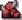

Nether Realm
A Nether Realm a pokol birodalma ahol a lángok uralnak mindent. Ez a pálya egy rémálom valóságába kalauzol el, ahol a pokol kapui kitárulnak.
A pálya elborult tájai tele vannak veszéllyel és kihívással, miközben a vulkánok lángjai és a lávafolyamok hömpölyögnek a a háttérben.
A játék haladásával egyre erősebb és veszélyesebb ellenfelek törnek majd elő a pokol mélységeiből, és csak azok a játékosok fognak a lehető legjobban teljesíteni, akik okosan használják ki a fejlesztések adta lehetőségeket.
A sötét és ördögi birodalomban nem csak a láva és a tűz jelent veszélyt, hanem az is, hogy az ellenségek káros hatásokat is képesek vetni a játékosokra.(Lásd a táblázatban)
Nether Realm
Pályához tartozó effekt:
Purifying Flames:
Az ellenségek a támadasaikkal 5 másodpercig égető hatást okoznak a torony számára (a torony védelmét nem veszi figyelembe), és emellett lecsökkentik a torony  védelmét 25%-al.
védelmét 25%-al.
(EZEK A HATÁSOK MAXIMUM 5x TUDNAK HALMOZÓDNI!)